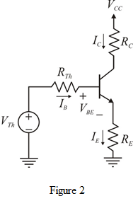

Refer to Figure P6.142 in the text book.
Determine the Thevenin’s equivalent resistance at the base terminal.
Determine the Thevenin equivalent voltage at the base terminal.

Refer to Figure P6.142 in the text book.
Determine the Thevenin’s equivalent resistance at the base terminal.
Determine the Thevenin equivalent voltage at the base terminal.
Draw the equivalent dc equivalent circuit of the circuit as shown in Figure P6.142 in the text book.

Apply Kirchhoff’s voltage law to the circuit in Figure 2.
Simplify further.
Transconductance of the amplifier is,
The resistance is,
is,
Determine the value of  .
.
 is,
is,
Write the expression of the voltage gain.
The voltage gain of the amplifier is,
Thus, the overall gain of the amplifier is .
.
Hence, the gain is reduced to from because of large change in  value.
value.